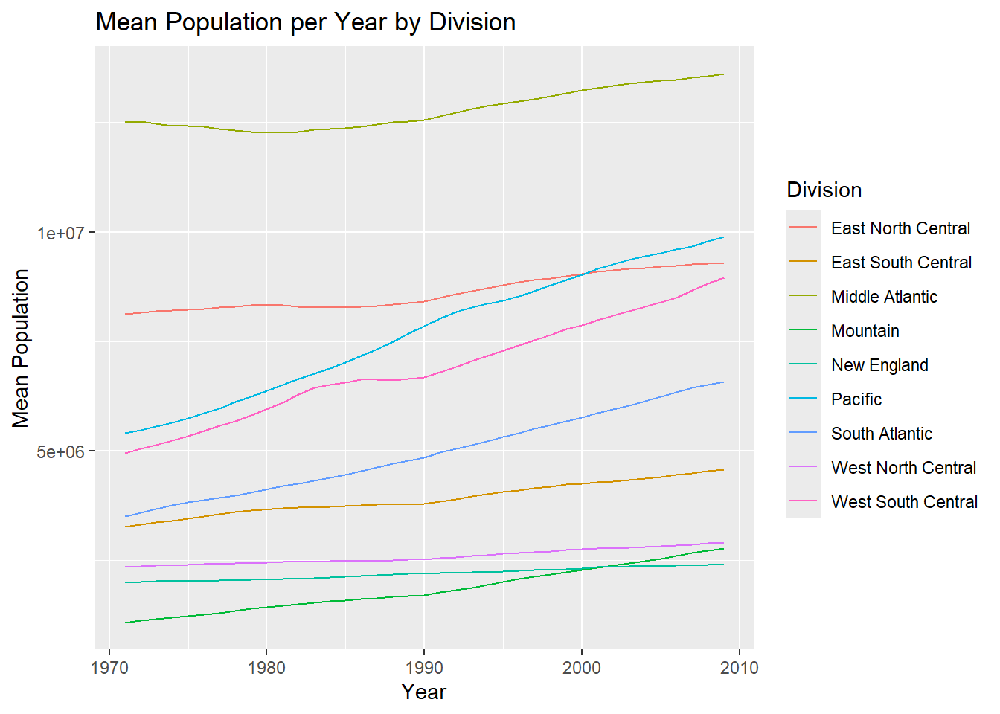

One of the goals of this project is to create a function that can take in a URL and process and parse similar types of data sets in a specific way. The data sets we are working with are files that contain Census Bureau information.
First Steps
Import the Data
We will start with the EDU01a data set and use it to outline the steps that will be necessary to create our wrapper function. To begin, the appropriate packages are loaded and the data imported using read_csv. This function is appropriate for csv files. The data already contains column names, which is the default for this function, so it is not necessary to specify an argument regarding column names.
Warning: package 'tidyverse' was built under R version 4.2.3
Warning: package 'ggplot2' was built under R version 4.2.3
Warning: package 'tibble' was built under R version 4.2.3
Warning: package 'tidyr' was built under R version 4.2.3
Warning: package 'readr' was built under R version 4.2.3
Warning: package 'purrr' was built under R version 4.2.3
Warning: package 'dplyr' was built under R version 4.2.3
Warning: package 'stringr' was built under R version 4.2.3
Warning: package 'forcats' was built under R version 4.2.3
Warning: package 'lubridate' was built under R version 4.2.3
Rows: 3198 Columns: 42
── Column specification ────────────────────────────────────────────────────────
Delimiter: ","
chr (22): Area_name, STCOU, EDU010187N1, EDU010187N2, EDU010188N1, EDU010188...
dbl (20): EDU010187F, EDU010187D, EDU010188F, EDU010188D, EDU010189F, EDU010...
ℹ Use `spec()` to retrieve the full column specification for this data.
ℹ Specify the column types or set `show_col_types = FALSE` to quiet this message.
#head(census_1a_original)
Steps 1 and 2: Select Columns and Pivot to Long Form, Remove Duplicate District of Columbia
The next step is to select the columns we are interested in, followed by pivoting the data into a long format, which is more appropriate for data analysis. In this case, we are selecting Area_name, which is also being renamed to area_name, STCOU, which is a state (first 2 digits) and county (last 3 digits) code and all columns that end with a “D”. These columns ending in “D” correspond to an id that identifies the type of survey and value associated with it and the 2 digit year. We also used filter() to remove duplicate District of Columbia data.
# A tibble: 6 × 4
area_name STCOU item_id enrollment
<chr> <chr> <chr> <dbl>
1 UNITED STATES 00000 EDU010187D 40024299
2 UNITED STATES 00000 EDU010188D 39967624
3 UNITED STATES 00000 EDU010189D 40317775
4 UNITED STATES 00000 EDU010190D 40737600
5 UNITED STATES 00000 EDU010191D 41385442
6 UNITED STATES 00000 EDU010192D 42088151
#view(census_1a_condensed)
Step 3: Add Year and Survey Code Columns
Next, we want to pull out the year from the item_id and convert it to an appropriate, 4-digit form placed in its own column. We also want to isolate and put in it’s own column the portion of the item_id that corresponds to the survey code and value associated with it. We can use the mutate function to add these columns. The substr() function allows you to extract a string based on position. For the year, for example, the numbers corresponding to the year are in the 8th and 9th position of the 10 character string. Then we add 1900 to the extracted 2 digit number to obtain the 4 digit year. The survey code is extracted in a similar manner.
# A tibble: 6 × 6
area_name STCOU item_id enrollment year survey_code
<chr> <chr> <chr> <dbl> <dbl> <chr>
1 UNITED STATES 00000 EDU010187D 40024299 1987 EDU0101
2 UNITED STATES 00000 EDU010188D 39967624 1988 EDU0101
3 UNITED STATES 00000 EDU010189D 40317775 1989 EDU0101
4 UNITED STATES 00000 EDU010190D 40737600 1990 EDU0101
5 UNITED STATES 00000 EDU010191D 41385442 1991 EDU0101
6 UNITED STATES 00000 EDU010192D 42088151 1992 EDU0101
Step 4: Create County and State Data Sets from Census Data Set
In this next step, we separate the observations into two data sets based on the presence or absence of a character string pattern in the area_name variable. Specifically, we use the grepl() function to identify observations within the area_name column that contain the pattern of a comma followed by a space and then two consecutive characters, which is indicative of county level data. First, we use the filter() function to select only those rows that contain the pattern and store these in the county_data tibble. then we use filter() to select only those rows that do NOT contain the pattern, and store those in the noncounty_data tibble. From here, we also assign a “county” or “state” class to each new data set.
# A tibble: 6 × 6
area_name STCOU item_id enrollment year survey_code
<chr> <chr> <chr> <dbl> <dbl> <chr>
1 Autauga, AL 01001 EDU010187D 6829 1987 EDU0101
2 Autauga, AL 01001 EDU010188D 6900 1988 EDU0101
3 Autauga, AL 01001 EDU010189D 6920 1989 EDU0101
4 Autauga, AL 01001 EDU010190D 6847 1990 EDU0101
5 Autauga, AL 01001 EDU010191D 7008 1991 EDU0101
6 Autauga, AL 01001 EDU010192D 7137 1992 EDU0101
head(noncounty_data)
# A tibble: 6 × 6
area_name STCOU item_id enrollment year survey_code
<chr> <chr> <chr> <dbl> <dbl> <chr>
1 UNITED STATES 00000 EDU010187D 40024299 1987 EDU0101
2 UNITED STATES 00000 EDU010188D 39967624 1988 EDU0101
3 UNITED STATES 00000 EDU010189D 40317775 1989 EDU0101
4 UNITED STATES 00000 EDU010190D 40737600 1990 EDU0101
5 UNITED STATES 00000 EDU010191D 41385442 1991 EDU0101
6 UNITED STATES 00000 EDU010192D 42088151 1992 EDU0101
Step 5: Add New Variable for County Data
Within the county data set, we now return to using substr() to extract the last two characters of the area_name variable, which indicates the two-letter abbreviation for which state in which the county is located. We store this in a new “state” variable.
# A tibble: 6 × 7
area_name STCOU item_id enrollment year survey_code state
<chr> <chr> <chr> <dbl> <dbl> <chr> <chr>
1 Autauga, AL 01001 EDU010187D 6829 1987 EDU0101 AL
2 Autauga, AL 01001 EDU010188D 6900 1988 EDU0101 AL
3 Autauga, AL 01001 EDU010189D 6920 1989 EDU0101 AL
4 Autauga, AL 01001 EDU010190D 6847 1990 EDU0101 AL
5 Autauga, AL 01001 EDU010191D 7008 1991 EDU0101 AL
6 Autauga, AL 01001 EDU010192D 7137 1992 EDU0101 AL
Step 6: Add New Variable for Non-County Data
For the non-county data set, we use a series of “ifelse” statements to indicate the set of states belonging to each U.S. division, creating a new “division” variable to store this information. When the area in question is not a state (e.g., UNITED STATES), this will return “ERROR”.
noncounty_data <- noncounty_data |>mutate(division =ifelse(area_name %in%c("CONNECTICUT", "MAINE", "MASSACHUSETTS", "NEW HAMPSHIRE", "RHODE ISLAND", "VERMONT"), "New England",ifelse(area_name %in%c("NEW JERSEY", "NEW YORK", "PENNSYLVANIA"), "Middle Atlantic", ifelse(area_name %in%c("ILLINOIS", "INDIANA", "MICHIGAN", "OHIO", "WISCONSIN"),"East North Central", ifelse(area_name %in%c("IOWA", "KANSAS", "MINNESOTA", "MISSOURI", "NEBRASKA","NORTH DAKOTA", "SOUTH DAKOTA"), "West North Central",ifelse(area_name %in%c("DELAWARE", "FLORIDA", "GEORGIA", "MARYLAND", "NORTH CAROLINA", "SOUTH CAROLINA", "VIRGINIA","DISTRICT OF COLUMBIA", "WEST VIRGINIA"), "South Atlantic",ifelse(area_name %in%c("ALABAMA", "KENTUCKY", "MISSISSIPPI", "TENNESSEE"),"East South Central",ifelse(area_name %in%c("ARKANSAS", "LOUISIANA", "OKLAHOMA", "TEXAS"),"West South Central",ifelse(area_name %in%c("ARIZONA", "COLORADO", "IDAHO", "MONTANA","NEVADA", "NEW MEXICO", "UTAH", "WYOMING"),"Mountain",ifelse(area_name %in%c("ALASKA", "CALIFORNIA", "HAWAII", "OREGON","WASHINGTON"), "Pacific", "ERROR"))))))))))head(noncounty_data)
# A tibble: 6 × 7
area_name STCOU item_id enrollment year survey_code division
<chr> <chr> <chr> <dbl> <dbl> <chr> <chr>
1 UNITED STATES 00000 EDU010187D 40024299 1987 EDU0101 ERROR
2 UNITED STATES 00000 EDU010188D 39967624 1988 EDU0101 ERROR
3 UNITED STATES 00000 EDU010189D 40317775 1989 EDU0101 ERROR
4 UNITED STATES 00000 EDU010190D 40737600 1990 EDU0101 ERROR
5 UNITED STATES 00000 EDU010191D 41385442 1991 EDU0101 ERROR
6 UNITED STATES 00000 EDU010192D 42088151 1992 EDU0101 ERROR
Data processing function creation
We now turn to a second data set EDU01b, which contains data structured similarly to EDU01a, with measurements from areas of the country taken across different years. In the steps below, we will recreate the steps above for this new data, but rather than simply copying code and modifying to apply to this one new data set, we will create functions that can apply the same set of steps to any similar data set.
Import the data
To begin, we import the new data set we will be working with. Although this step will ultimately be incorporated into our final wrapper function, importing at this point allows us to build and test each component of our functions.
Rows: 3198 Columns: 42
── Column specification ────────────────────────────────────────────────────────
Delimiter: ","
chr (22): Area_name, STCOU, EDU010197N1, EDU010197N2, EDU010198N1, EDU010198...
dbl (20): EDU010197F, EDU010197D, EDU010198F, EDU010198D, EDU010199F, EDU010...
ℹ Use `spec()` to retrieve the full column specification for this data.
ℹ Specify the column types or set `show_col_types = FALSE` to quiet this message.
#head(census_1b_original)
Function to Select Columns and Pivot to Long Form
Creating the first part of the function is fairly simple and includes the steps of selecting our columns, renaming and pivoting. Our arguments for the function are our tibble we imported and a default variable name which can be changed as appropriate for the data set. Testing the function produces a similar result as obtained with the first data set.
The next part of the function incorporates the addition of our two extra columns. In this case, we also take in our tibble, but don’t need to specify the default variable since it was specified in the previous function. Testing the function returned the expected tibble.
For the next steps, we will change up the order a bit. Instead of proceeding directly to step 4, which involves splitting the data into two separate data sets, we will first create functions to add variables as done in steps 5 and 6. This will allow us to then call these functions as a part of step 4, thus accomplishing all 3 steps with one higher-order function.
For step 5, the function below takes the output from the previous step and extracts the last two characters of the area_name variable to create the new “state” variable. The only argument is the name of the census data tibble output from the previous step.
For step 6, we create a function to assign each state to its corresponding division in the United States. Given that the data set has not yet been split between county and non-county data, this function will return “ERROR” for the majority of observations which correspond to county-level data if tested independently. However, in practice, it will be called after the split has been performed in step 4.
add_division <-function(census_df) { census_df |>mutate(division =ifelse(area_name %in%c("CONNECTICUT", "MAINE", "MASSACHUSETTS", "NEW HAMPSHIRE", "RHODE ISLAND", "VERMONT"), "New England",ifelse(area_name %in%c("NEW JERSEY", "NEW YORK", "PENNSYLVANIA"),"Middle Atlantic",ifelse(area_name %in%c("ILLINOIS", "INDIANA", "MICHIGAN", "OHIO", "WISCONSIN"),"East North Central",ifelse(area_name %in%c("IOWA", "KANSAS", "MINNESOTA", "MISSOURI", "NEBRASKA","NORTH DAKOTA", "SOUTH DAKOTA"), "West North Central",ifelse(area_name %in%c("DELAWARE", "FLORIDA", "GEORGIA", "MARYLAND", "NORTH CAROLINA", "SOUTH CAROLINA", "VIRGINIA", "DISTRICT OF COLUMBIA", "WEST VIRGINIA"), "South Atlantic", ifelse(area_name %in%c("ALABAMA", "KENTUCKY", "MISSISSIPPI","TENNESSEE"), "East South Central", ifelse(area_name %in%c("ARKANSAS", "LOUISIANA", "OKLAHOMA", "TEXAS"),"West South Central",ifelse(area_name %in%c("ARIZONA", "COLORADO", "IDAHO", "MONTANA","NEVADA", "NEW MEXICO", "UTAH", "WYOMING"),"Mountain", ifelse(area_name %in%c("ALASKA", "CALIFORNIA", "HAWAII", "OREGON", "WASHINGTON"), "Pacific", "ERROR"))))))))))}#test function#result_step_6 <- add_division(result_step_5)#head(result_step_6)
Function to Split the Data Set into County and Non-County Data
Here, we create a higher-order function that will split the data into two data sets (one for county-level data, and one for non-county data), add the county or state class to each data set, and then call the above two functions to add the new variables.
For our final step of data processing, we now create a “wrapper function” that will apply the above functions to accomplish all of these steps at once. The wrapper function will begin by reading in the data, and thus takes in an initial argument defining the url to access the data. The second argument defines the name of the variable that will store the measurement for each observation once the pivot to long form is complete. As above, this argument is set to a default of “enrollment”, such that only the url is absolutely required. The result is a list with two tibbles, one for county and one for non-county (state).
data_processing_wrapper <-function(url, default_var_name ="enrollment") { result <-read_csv(url) result <-select_pivot(result, default_var_name = default_var_name) |>add_year_survey_code() |>split_data() return(result)}
Calling the Functions
Now, we call our function twice, once for data set EDU01a and again for EDU01b, which will create two lists, each containing two tibbles (one for county and one for non-county data).
Rows: 3198 Columns: 42
── Column specification ────────────────────────────────────────────────────────
Delimiter: ","
chr (22): Area_name, STCOU, EDU010187N1, EDU010187N2, EDU010188N1, EDU010188...
dbl (20): EDU010187F, EDU010187D, EDU010188F, EDU010188D, EDU010189F, EDU010...
ℹ Use `spec()` to retrieve the full column specification for this data.
ℹ Specify the column types or set `show_col_types = FALSE` to quiet this message.
Rows: 3198 Columns: 42
── Column specification ────────────────────────────────────────────────────────
Delimiter: ","
chr (22): Area_name, STCOU, EDU010197N1, EDU010197N2, EDU010198N1, EDU010198...
dbl (20): EDU010197F, EDU010197D, EDU010198F, EDU010198D, EDU010199F, EDU010...
ℹ Use `spec()` to retrieve the full column specification for this data.
ℹ Specify the column types or set `show_col_types = FALSE` to quiet this message.
#census_df_list_EDU01a#census_df_list_EDU01b
Data Combining Function
In this final step for preparing the data, we create a function that takes in the results of two calls of the wrapper function and combines them. Specifically, we use the bind_rows function to append the rows of two like tibbles together, resulting in two new comprehensive tibbles (one for county and one for state data). These are output into a single list object.
The goal of this section is to create two functions that will take in combined data sets (as a list) from our data combining function and create plots for county and non-county (state) data. Details of these functions are provided in subsequent sections.
State Plotting Function
For the state plotting function, we want to create a function that will take in our combined census data sets and our default variable as arguments and returns a plot of year versus the mean of the default variable for each division. To accomplish this, we first need to do some manipulation with our tibble. First, we isolate the proper tibble from the list using $noncounty_data. Since the United States is not a division and has “ERROR” in the division column, we need to filter to remove those rows. Finally we can group by year and division to so that the appropriate means are calculated. To calculate a mean for each year and division combination, we use summarize and reference our default variable name for the mean function.
After putting our data in the proper form and obtaining means, we can create our line plot. We use ggplot to create a plot instance. The plot instance needs two arguments, one specifying our data and the ohter an aesthetic (aes) mapping argument. The aes mapping defines the x and y axis variables, as well as mapping for division so the plot assigns a different color and line to each division. Next we add layers. Since we want a line connecting years for each division, we use geom_line. We chose to leave the defaults in place so no arguments are specified. A labs layer was then added to modify some labels. The axes and legend labels are capitalized and the title and y-axis label specified in a way that will allow the names to change dynamically according to the default variable name used when calling the function.
state.plot <-function(df, var_name ="enrollment") { result <- df$noncounty_data |>filter(area_name !="UNITED STATES") |>group_by(division, year) |>summarize(mean_values =mean(get(var_name)), .groups ="drop") g <-ggplot(result, aes(x = year, y = mean_values, color = division)) +geom_line() +labs (x ="Year", y =str_to_title(paste("mean", var_name)), color ="Division", title =str_to_title(paste("mean", var_name, "per year by division")))return(g)}state.plot(combined_census_lists_EDU)
Investigation of Possible Outlier in Middle Atlantic
There is a decrease in enrollment in 1997 for the Middle Atlantic, so there may be an outlier. The data was filtered for 1997 and Middle Atlantic. We can see that the enrollment for New Jersey is recorded as zero.
# A tibble: 3 × 7
area_name STCOU item_id enrollment year survey_code division
<chr> <chr> <chr> <dbl> <dbl> <chr> <chr>
1 NEW JERSEY 34000 EDU010197D 0 1997 EDU0101 Middle Atlantic
2 NEW YORK 36000 EDU010197D 2843415 1997 EDU0101 Middle Atlantic
3 PENNSYLVANIA 42000 EDU010197D 1804256 1997 EDU0101 Middle Atlantic
EDU01097 corresponds to public education enrollment for fall 1996-1997. An online search found a document from the New Jersey Department of Education indicating that enrollment for the 1996-1997 school year was 1,227,832, so we will replace the zero with this number and rerun the plot function (https://nces.ed.gov/pubs2000/stateprofiles/pdf/new_jersey.pdf). The incorrect data point can be replaced in the original combined data set using ifelse() in a mutate statement.
# A tibble: 3 × 7
area_name STCOU item_id enrollment year survey_code division
<chr> <chr> <chr> <dbl> <dbl> <chr> <chr>
1 NEW JERSEY 34000 EDU010197D 1227832 1997 EDU0101 Middle Atlantic
2 NEW YORK 36000 EDU010197D 2843415 1997 EDU0101 Middle Atlantic
3 PENNSYLVANIA 42000 EDU010197D 1804256 1997 EDU0101 Middle Atlantic
state.plot <-function(df, var_name ="enrollment") { result <- df$noncounty_data |>filter(area_name !="UNITED STATES") |>group_by(division, year) |>summarize(mean_values =mean(get(var_name)), .groups ="drop") g <-ggplot(result, aes(x = year, y = mean_values, color = division)) +geom_line() +labs (x ="Year", y =str_to_title(paste("mean", var_name)), color ="Division", title =str_to_title(paste("mean", var_name, "per year by division")))return(g)}#state.plot(combined_census_lists_EDU_modified)
County Plotting Function
For county plotting, we will create a function that takes in the combined county data frame and several other arguments, including a selected state (default = North Carolina) and a specified variable name (default = “enrollment”). The function will then sort the counties within the state according to the value of the specified variable. Additional arguments indicate whether the user wants to sort from largest to smallest (sort = “top”) or smallest to largest (sort = “bottom”), and how many counties from the list should be included in the top or bottom grouping. Default sorting is “top” and default number of counties is 5. Note that if something other than “top” or “bottom” is specified for sort, the code will abort and an error message will be returned.
In order to accomplish this, the first portion of the code will filter the county data by the selected state and then compute mean values of the specified variable for each county in that state. The list of counties and their corresponding means are stored temporarily as “result”.
From there, a series of if/else statements sorts the resulting list of counties according to which direction has been specified (top or bottom), and then the first x number of rows are retained in “county_names” for the next step.
Because we are not using continuous piping, and because our initial code reduced the data down to a single mean value per county in order to sort and identify top or bottom counties, we return to the original combined data as specified in our function arguments for the next step. We now apply the filter function and reference the list of county names generated in the previous step to retain each annual observation for each of the identified counties.
Finally, we use ggplot to create a line graph for each county, with year on the x-axis and the value of our specified variable on the y axis. We also specify color coding for the different lines representing different counties, create labels for our axes, and add a title.
plot.county <-function(census_df, var_name ="enrollment", select_state ="NC", sort ="top", x =5){result <- census_df$county_data |>filter(state == select_state) |>group_by(area_name) |>summarize(mean_values =mean(get(var_name)))if(sort %in%c("top")){ county_names <- result |>arrange(desc(mean_values)) |>slice_head(n=x) } elseif(sort %in%c("bottom")){ county_names <- result |>arrange(mean_values) |>slice_head(n=x) } else {print(paste(sort, "is not a valid selection. Sort must be top or bottom."))break}output <- census_df$county_data |>filter(area_name %in% county_names$area_name)ggplot(output, aes(x = year, y =get(var_name), color = area_name)) +geom_line() +labs (x ="Year", y =str_to_title(var_name), color ="County", title =str_to_title(paste(var_name, "per year for", sort, x, "counties in", select_state)))}#plot.county(combined_census_lists_EDU, sort = "bottom", x=5)
Executing Our Functions and Plotting the Data
In this section, we will now tie everything together that we have created up to this point. We will execute our functions to import data, implement the processing steps, combine two data sets into one, and then create state and county plots. We will also now be able to apply this to multiple new data sets.
EDU Data Sets
We begin with the two EDU data sets we have been working with until now. These are each called in and processed by our data_processing_wrapper function, combined using our combined_census_lists function, and then visualized using our state.plot and plot.county functions.
Rows: 3198 Columns: 42
── Column specification ────────────────────────────────────────────────────────
Delimiter: ","
chr (22): Area_name, STCOU, EDU010187N1, EDU010187N2, EDU010188N1, EDU010188...
dbl (20): EDU010187F, EDU010187D, EDU010188F, EDU010188D, EDU010189F, EDU010...
ℹ Use `spec()` to retrieve the full column specification for this data.
ℹ Specify the column types or set `show_col_types = FALSE` to quiet this message.
Rows: 3198 Columns: 42
── Column specification ────────────────────────────────────────────────────────
Delimiter: ","
chr (22): Area_name, STCOU, EDU010197N1, EDU010197N2, EDU010198N1, EDU010198...
dbl (20): EDU010197F, EDU010197D, EDU010198F, EDU010198D, EDU010199F, EDU010...
ℹ Use `spec()` to retrieve the full column specification for this data.
ℹ Specify the column types or set `show_col_types = FALSE` to quiet this message.
Now we apply our functions to new data, this time looking at state and county population instead of educational enrollment. We will import and process 4 different population (PST) data sets using our data_processing_wrapper, and combine them using our combine_census_lists function as before. Because our function is designed to combine 2 data sets, we will apply it in several steps, first joining 2 data sets together, then combining the result with a 3rd, and finally combining that with a 4th for a complete data set. Finally, we will use our state.plot and plot.county functions as before to visualize the data.
Rows: 3198 Columns: 42
── Column specification ────────────────────────────────────────────────────────
Delimiter: ","
chr (22): Area_name, STCOU, PST015171N1, PST015171N2, PST015172N1, PST015172...
dbl (20): PST015171F, PST015171D, PST015172F, PST015172D, PST015173F, PST015...
ℹ Use `spec()` to retrieve the full column specification for this data.
ℹ Specify the column types or set `show_col_types = FALSE` to quiet this message.
Rows: 3198 Columns: 42
── Column specification ────────────────────────────────────────────────────────
Delimiter: ","
chr (22): Area_name, STCOU, PST025182N1, PST025182N2, PST025183N1, PST025183...
dbl (20): PST025182F, PST025182D, PST025183F, PST025183D, PST025184F, PST025...
ℹ Use `spec()` to retrieve the full column specification for this data.
ℹ Specify the column types or set `show_col_types = FALSE` to quiet this message.
Rows: 3198 Columns: 42
── Column specification ────────────────────────────────────────────────────────
Delimiter: ","
chr (22): Area_name, STCOU, PST035191N1, PST035191N2, PST035192N1, PST035192...
dbl (20): PST035191F, PST035191D, PST035192F, PST035192D, PST035193F, PST035...
ℹ Use `spec()` to retrieve the full column specification for this data.
ℹ Specify the column types or set `show_col_types = FALSE` to quiet this message.
Rows: 3198 Columns: 42
── Column specification ────────────────────────────────────────────────────────
Delimiter: ","
chr (22): Area_name, STCOU, PST045200N1, PST045200N2, PST045201N1, PST045201...
dbl (20): PST045200F, PST045200D, PST045201F, PST045201D, PST045202F, PST045...
ℹ Use `spec()` to retrieve the full column specification for this data.
ℹ Specify the column types or set `show_col_types = FALSE` to quiet this message.
state.plot <-function(df, var_name ="population") { result <- df$noncounty_data |>filter(area_name !="UNITED STATES") |>group_by(division, year) |>summarize(mean_values =mean(get(var_name)), .groups ="drop") g <-ggplot(result, aes(x = year, y = mean_values, color = division)) +geom_line() +labs (x ="Year", y =str_to_title(paste("mean", var_name)), color ="Division", title =str_to_title(paste("mean", var_name, "per year by division")))return(g)}state.plot(combined_census_lists_PST)

County Plot Function Applied to PST Data Sets
Below, we plot county population data for several different states using different input arguments. In this case, we will specify var_name = “population” throughout, given that the default var_name of “enrollment” does not exist in these data.